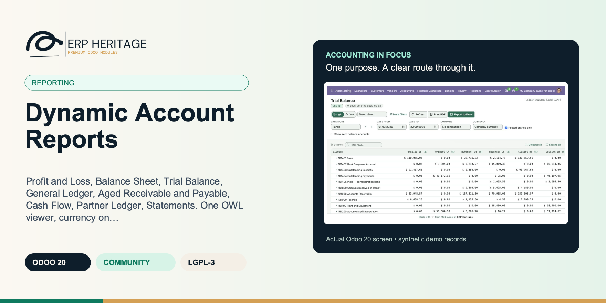
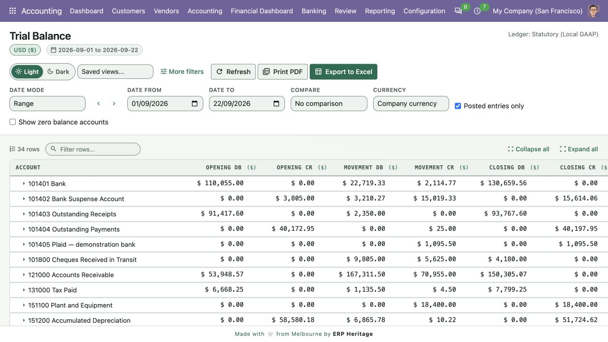
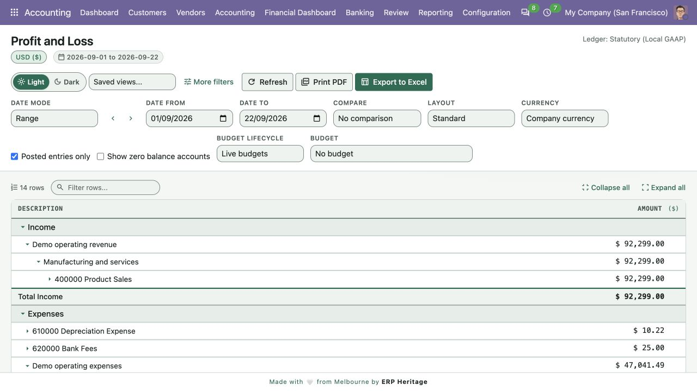
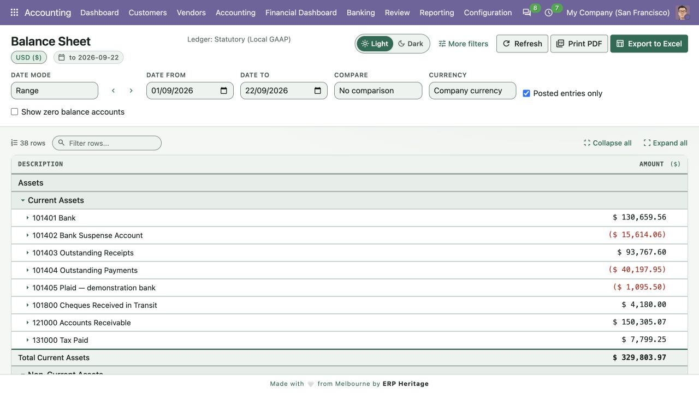
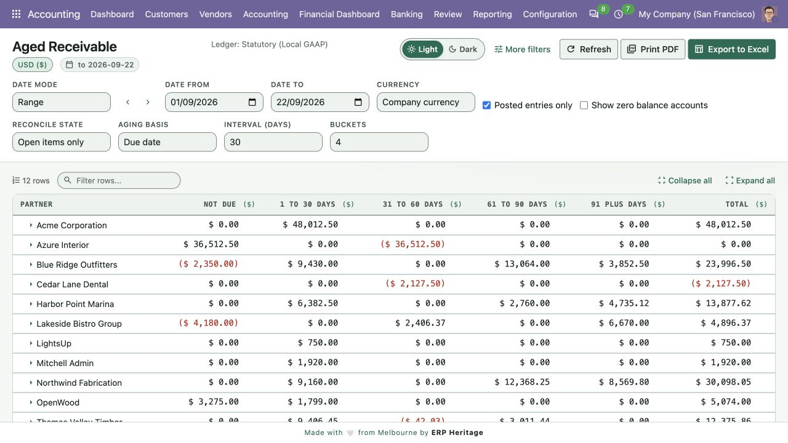
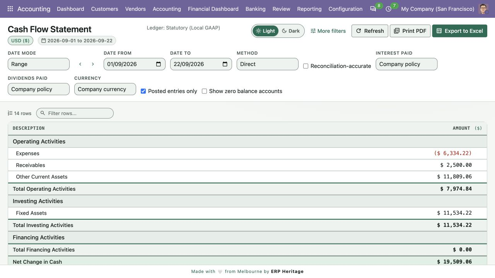
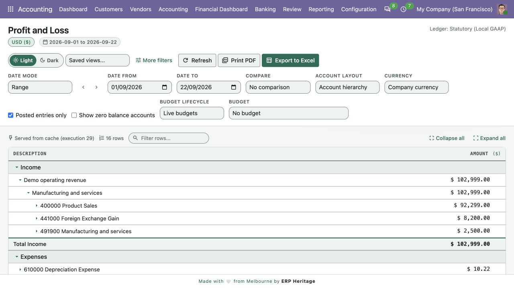
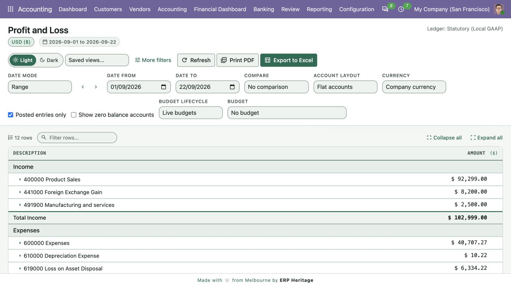

ERP HERITAGE / ODOO 20 COMMUNITY
Profit and Loss, Balance Sheet, Trial Balance, General Ledger, Aged Receivable and Payable, Cash Flow, Partner Ledger, Statements. One OWL viewer, currency on every cell, audit log per render.
LGPL-3 · Odoo 20 · v20.0.1.8.3 · Module guide, setup, workflows and rollout checks
The purpose
The financial reporting layer of the ERP Heritage accounting suite for Odoo 20 Community. Fifteen accountant reports are built on a single AbstractModel handler hierarchy and rendered through one OWL viewer, so the look and feel is uniform across every report. The hot path is plain Python SQL, not the ORM: a parameter-bound, posted-only, company-scoped query against journal item that stays responsive on large databases.
Inside Odoo 20
Captured from Odoo 20 Community using synthetic demonstration records. Configuration screens show the available workflow; external service connectivity still requires the relevant provider setup and validation.

Statutory trial balance separates opening, period movement and closing debit and credit amounts.
Captured 2026-09-22 from isolated Odoo 20 Community database with synthetic demonstration records. No external submission or live banking activity is represented.

Profit and loss report expands native parent-account groups into nested revenue and expense accounts.
Captured 2026-09-22 from isolated Odoo 20 Community database with synthetic demonstration records. No external submission or live banking activity is represented.

Statutory balance sheet presents account lines and section subtotals for the selected reporting date.
Captured 2026-09-22 from isolated Odoo 20 Community database with synthetic demonstration records. No external submission or live banking activity is represented.

Receivables ageing groups open items by due date and displays partner balances across ageing buckets.
Captured 2026-09-22 from isolated Odoo 20 Community database with synthetic demonstration records. No external submission or live banking activity is represented.

Direct-method cash flow report separates operating, investing and financing movements within the selected ledger scope.
Captured 2026-09-22 from isolated Odoo 20 Community database with synthetic demonstration records. No external submission or live banking activity is represented.

Account hierarchy shows three native account levels, an archived grouping parent, and its own 2,500 posting included exactly once in the 102,999 income total.
Captured 2026-09-22 from an isolated Odoo 20 Community database with synthetic records. Hierarchy and flat layouts use identical company, statutory ledger and September date scope. No live service or external submission is represented.

Flat accounts removes parent rollup rows while preserving the same 102,999 income total and the parent account own 2,500 posting.
Captured 2026-09-22 from an isolated Odoo 20 Community database with synthetic records. Hierarchy and flat layouts use identical company, statutory ledger and September date scope. No live service or external submission is represented.
Inside this module
Executive Summary, Deferred Revenue, Deferred Expense, Bank Reconciliation, Trial Balance, P&L, Balance Sheet, General Ledger, Partner Ledger, Aged Receivable, Aged Payable, Cash Flow, Customer Statement, Vendor Statement, and Analytic Balance.
Both sides; the customer statement also lands on the customer portal home for self-service.
Every monetary cell renders with the company currency symbol; the XLSX writer builds a matching Excel number-format string so the spreadsheet matches the screen cell for cell.
Custom and multi-period comparison in either order, plus Profit and Loss, Balance Sheet, and Trial Balance columns by analytic account or plan with independently queried totals.
Trial Balance, Profit and Loss, and Balance Sheet offer Account hierarchy or Flat accounts using native Parent Account relationships. Parent own postings and descendants roll up once, including relevant archived parents and offsetting children. Saved views and scheduled exports retain the layout. Exact drill-down keeps company, ledger, period and analytic scope.
Every render including cache hits writes an audit row pointing at the source compute. An auditor can re-execute the same render later.
Universal PDF template with a brand footer; XLSX writer with the same currency block as the screen cell.
Every SQL build emits company scope; cache key carries the company set canonically so two scopes never collide.
From input to outcome
Choose the report that answers the business question, then state company and period scope before comparing totals. Gather report dates, companies, journal items, analytic allocations, comparison periods and currency settings. Use a representative case with a known expected result so the team can separate configuration decisions from unexpected behaviour. Keep the supporting commercial or accounting evidence available during review.
Use period comparison and supported analytic columns where the report needs them, then expand account detail and inspect a relevant cell. Follow the record’s available actions in the order intended by the workflow. Review the selected company, relevant dates and any validation messages before continuing. If the source data changes, reassess the result against the updated evidence.
Trace selected totals to their scoped journal items and compare the screen with its PDF or XLSX output. Compare the outcome with the expected treatment for this case and record the reason for any difference that requires follow-up. Give exceptions an owner so they do not disappear inside a period-end spreadsheet.
Retain the report parameters with the exported pack so a reviewer can distinguish an operating report from a differently scoped rerun. Include the accepted operating example, configuration choices and unresolved dependencies in the handover. Review them when business policy, source data or the surrounding Odoo applications change.
Business situations
Dynamic Account Reports is relevant to accountants, controllers and finance reviewers who need to answer this question: Which posted balances explain performance, financial position and unsettled customer or supplier amounts? Start with the process that creates the decision, identify its owner and agree what evidence the reviewer needs. A narrow pilot helps the team evaluate the supported workflow using its own accounting data before broadening access.
Use the module’s reporting role as one part of a controlled close. Bring the relevant report dates, companies, journal items, analytic allocations, comparison periods and currency settings to the review, then explain the result alongside the business event it represents. Establish which outputs become part of the reporting pack and which outstanding matters need a separate accounting decision.
Turn the business question into an acceptance case: Which posted balances explain performance, financial position and unsettled customer or supplier amounts? Use one ordinary example and one relevant exception from the supported scope below. Ask the intended operator to prepare it and the reviewer to explain the result. Retain that accepted example with the deployment notes so future changes can be assessed against an understood process.
Before the first result
Confirm that the organisation needs the supported reporting process described here. Identify the responsible accountants, controllers and finance reviewers and write down the decision they expect the module to support. Use the limitations section to separate shipped behaviour from an integration, professional judgement or operational service that needs another owner.
Prepare report dates, companies, journal items, analytic allocations, comparison periods and currency settings. Check the relevant records in the intended company and use dates that match the business event. Resolve missing accounting configuration before evaluating calculated output; plausible-looking totals do not establish that the chosen inputs or policies are correct.
This module declares Accounting Suite Base as part of its installation foundation. Its direct standard-Odoo dependencies are the core applications supplied through the declared dependency chain. Review the actual dependency set in the target database before a rollout, especially where another addon also extends the same accounting models, menus or posting actions.
Define who operates Dynamic Account Reports, who reviews unusual results and who maintains configuration. Run the representative workflow below in a test database using the intended users. Confirm that users can reach the work they own and that the reviewer understands the available evidence before moving the process into live operation.
Workflow reference
Reports included: Executive Summary, Deferred Revenue, Deferred Expense, Bank Reconciliation Proof, Profit and Loss, Balance Sheet, Trial Balance, General Ledger, Partner Ledger, Aged Receivable, Aged Payable, Cash Flow (both direct and indirect methods), Customer Statement, Vendor Statement, and Analytic Balance.
A report-input-version cache. Each company carries a server-owned atomic SQL counter covering posted-ledger changes plus report-visible master data, configuration, exchange rates, and supported suite sub-ledgers. Cached results are keyed by normalized effective options, that version, and strict company-scope equality, so stale or overlapping-scope payloads are rejected.
An append-only audit log. Every render writes one row, including cache hits, and that row points back at the source compute it was served from. The model rejects edits and blocks deletion, so the trail cannot be altered even by an administrator.
Drill down. Data lines (accounts, partners, journal items) click through to the underlying journal items or the journal entry form. Section headers, subtotals and computed rows are aggregates and are not drillable.
Comparatives. Prior period, prior year, and explicit custom date windows are native. Profit and Loss, Balance Sheet, Executive Summary, and Trial Balance can show several successive periods in ascending or descending order; Trial Balance repeats its complete opening, movement, and closing block for every period. Single-comparison variance percentages remain divide-by-zero safe and year shifting remains leap-day safe.
Analytic columns. Profit and Loss, Balance Sheet, and Trial Balance pivot horizontally by selected analytic accounts or analytic plans and can combine those groups with every comparison period. Each period carries an independently queried Total, so overlapping distributions and unallocated amounts never make a summed column look authoritative. Grouped headers remain aligned on screen and in XLSX and PDF.
Cell-accurate drilldown. Every new period and analytic value column carries its own validated date, company, analytic-account, and analytic-plan scope. Clicking a drillable cell replays that exact scope, including weighted analytic allocation, instead of opening a broader ledger domain; synthetic retained-earnings cells fail closed when no exact journal-line projection exists.
Currency-aware rendering. Every monetary cell renders with the company currency symbol, and the XLSX writer emits a matching Excel number-format string so the spreadsheet matches the screen cell for cell. Sectioned reports nest by the parent-account hierarchy of the chart with per-user fold persistence.
Presentation currency. A currency selector restates any report into a chosen currency. Balance-sheet and ledger balances use the period-end closing rate, while Profit and Loss flows use an audit-visible, day-weighted period-average rate in line with IAS 21. Labels, dates and percentages remain untouched. For companies that post in more than one currency, the General Ledger and Partner Ledger add an "Amount in Currency" column that shows each line's original transaction amount and currency code next to the company-currency figures.
Multi-select filtering. Beside each single-pick filter, a "Pick more" button opens a searchable, checkbox records picker so you can scope a report to several partners, accounts or analytic accounts at once.
This is the free anchor for the suite. For a custom report builder and scheduled email delivery, see the Dynamic Reports Pro module that builds on top of this one.
What was exchanged without cash, e.g. 'Warehouse racking acquired under a five-year lease' or 'Convertible note series A converted to ordinary shares'.
Illustrative implementation exercise. A controller sees an unexpected movement in expenses compared with the prior quarter. Start with a consistent company and posted-ledger scope, then compare the intended periods. Expand the relevant account hierarchy and drill into the amount that prompted the question. Where analytic columns are supported, review a chosen allocation without confusing the allocated view with the total company result. Export the reviewed report to PDF and XLSX and compare a selected line and its context across the screen and files. If the management pack also contains cash flow or open-item reports, document their different interpretation: a period flow, a point-in-time financial position and current outstanding receivables are not interchangeable measures.
Worked implementation guide
Choose a familiar reporting period and record its company, date range, posting selection and currency. Review the Profit and Loss, Balance Sheet and relevant ledger detail using those agreed settings. A period activity report and an as-of balance answer different questions, so compare equivalent amounts instead of expecting every headline number to match. Follow one material line into the underlying records and keep its selected filters with the review evidence. When comparing periods, confirm that the comparative range is the one management expects.
Export the accepted example through the available PDF and Excel actions. Check headings, signs, currency and totals, then give the output to the person who will use it outside Odoo. Confirm that the document explains its scope without requiring the reader to remember the filter panel. Retain that sample with the management-pack specification so future changes can be reviewed consistently.
Questions before rollout
It is designed for accountants, controllers and finance reviewers. Its central business question is: Which posted balances explain performance, financial position and unsettled customer or supplier amounts? The listing describes the shipped operating scope and the decisions that remain with the organisation. Evaluate it against your own records and review process, rather than treating the module name as a promise to cover every scenario in that accounting area.
Have report dates, companies, journal items, analytic allocations, comparison periods and currency settings ready, together with the person who owns the related accounting policy. Choose the report that answers the business question, then state company and period scope before comparing totals. A known example makes it possible to check the result and resolve configuration questions before the process is repeated across more records or companies.
Trace selected totals to their scoped journal items and compare the screen with its PDF or XLSX output. Keep the relevant source evidence with the output and be explicit about company, date and policy choices. The most useful review asks whether the result follows from the business inputs, not only whether the operation completed without a validation message.
It belongs to the reporting family. Its declared custom dependency foundation is Accounting Suite Base. Installing the complete suite also brings other operating and specialist modules; using this focused module should be evaluated against its own dependency list and scope. Optional services still need their own configuration and agreement where applicable.
Retain the report parameters with the exported pack so a reviewer can distinguish an operating report from a differently scoped rerun.
No. Dynamic Account Reports provides the specific records, calculations or workflow described in this listing. The organisation remains responsible for its source information, accounting choices, supporting evidence and review. Where the process uses an estimate, a contract assessment or an external service, appoint the appropriate owner before relying on the output.
Scope and requirements
Retain the report parameters with the exported pack so a reviewer can distinguish an operating report from a differently scoped rerun.
Standards references describe the accounting subject addressed by the module. They do not establish certification, statutory filing acceptance or suitability for every jurisdiction. Your finance team owns its assumptions, accounting policies and review.
Installation scope
Odoo installs the following direct dependencies automatically. Additional dependencies can be brought in by those modules. Related modules in the wider catalogue are optional unless they appear in this dependency chain.
Shared reporting engine for the ERP Heritage Odoo 20 Community accounting suite, providing a reproducible report-execution audit log and a move-version result cache. Append-only audit log of every report render with user, timestamp, the full options snapshot, runtime, and a SHA-256 result hash for XLSX and PDF output, plus a multi-company analytic-aware parameterised SQL builder with no raw user input in SQL, a three-tier User/Manager/read-only Auditor privilege model, and a currency-aware XLSX writer. Odoo 20 Community accounting reporting engine, reproducible financial report audit trail, move-version report cache invalidation, multi-company parameterised SQL builder, append-only audit log, read-only auditor role, SHA-256 report hash compliance, currency-aware XLSX export, analytic-aware journal item aggregation.
Included dependency: eh_account_base. The shared reporting engine under the ERP Heritage accounting modules: an append-only render audit log, precise per-company cache invalidation, and a whitelist-only parameterised SQL builder.
Acceptance guide
The following are recommended rollout checks, not claims of additional built-in features. Apply the checks relevant to this module and retain evidence of your own results.
Select a recent, closed period that your finance team understands well. Keep its approved source documents, ledger totals and existing working papers available. Reproduce that period in a staging database before working on current transactions. A familiar period makes differences visible: you can distinguish an opening balance problem from a configuration choice, a timing difference or a genuine defect. Agree which person owns each discrepancy and what evidence will close it. Successful installation is the starting point; a repeatable business outcome is the acceptance criterion.
Write down the output your team needs from this module: a reviewed transaction, an exported file, a reconciled balance, an approved schedule or an operational queue. Identify who prepares it, who reviews it and who relies on it next. Make the scope concrete with one company, one reporting period and a small representative document set. Include an ordinary case and an exception. This keeps the evaluation focused on the business decision instead of the number of available screens, and gives reviewers a consistent way to compare the new workflow with their current process.
Use the Odoo 20 edition of the module and its dependencies together. The manifest defines what Odoo installs automatically; a feature mentioned elsewhere in the wider product family is not automatically included. Review the dependency guide on this page before enabling the complete suite, especially where your deployment also uses Sales, Purchase, Inventory or website components. Confirm that your hosting arrangement accepts custom server modules and their Python requirements. Keep a copy of the installed module versions with your acceptance record so a later update can be checked against the same baseline.
Check the companies, currencies, fiscal periods, journals, accounts and partner records used by your sample. Confirm that account purposes agree with your chart of accounts and that archived records are not being selected inadvertently. Review company-specific settings while the intended company is active. Where a workflow needs bank details, analytic dimensions, product information or payment terms, validate those inputs with their owner. Clean master data reduces repeated exceptions and makes it easier to investigate the exceptions that remain. Keep the preparation list short enough for someone else to repeat it.
Decide which source establishes the opening position before introducing new transactions. Save the source date, company, currency and supporting reconciliation. If a module maintains a schedule or a working-paper balance alongside the ledger, document how that opening amount should tie to the general ledger. Do not use balancing entries to hide a difference during the pilot. Classify the difference, correct its source and rerun the comparison. The resulting trail is useful both for your internal reviewer and for support if an unexpected calculation needs investigation.
Choose named users for preparation, review and administration. Confirm their practical access by signing in as those users in staging, rather than relying on an administrator's view of the menus. A visible menu does not replace model access or record restrictions, and a hidden menu does not by itself prove that data is protected. For your own acceptance check, verify the specific business operations each role needs. If your organization requires separation of duties, include that policy in the rollout criteria and check the actual workflow against it before granting production access.
Run the sample with the intended company selected, then repeat the relevant navigation and search checks as a user assigned to a different company. Record which company owns each source document and each generated result. For users who work across entities, confirm how their allowed-company selection affects totals and available records. Investigate any cross-company difference before it becomes a month-end problem. Group-level work and company-level work have different scopes; use the appropriate module and document the scope on the review evidence instead of assuming one screen represents both.
Include a company-currency case and, where relevant to the module, a foreign-currency case. Check the date used to select exchange rates and keep the rate source available to the reviewer. Add a transaction near a period boundary so the team can see whether document date, accounting date or another business date drives the result. Test decimal precision with a small amount as well as a large one. Record the expected rounding treatment. These checks turn vague differences in totals into questions that can be resolved against your accounting policy.
Choose one result and follow the available links or record references back to the original business document. Compare its company, partner, amount, currency and dates with the expected source. Where the workflow creates a journal entry, inspect the accounts and balancing lines before relying on an aggregate report. Where it exports a file, compare the file's records with the selected batch. Save a small, intelligible evidence set instead of an indiscriminate screenshot archive. A reviewer should be able to explain what happened without needing the original preparer beside them.
If this module creates or updates accounting entries, separate preparation from the decision to post in your operating procedure. Inspect the proposed outcome, resolve missing configuration and confirm the intended period before using a posting action. If the module does not post entries, identify the equivalent commitment point, such as sending a file or approving a review record. Record who is allowed to make that decision. The page describes the module's supported workflow; your team still needs an operating policy that fits its accounting responsibilities and approval structure.
From pilot to production
Use a deliberately incomplete sample in staging: a missing required setting, an unsuitable date or a source document that is not ready for the next step. Observe the actual message and the record state that remains. Correct the input and repeat the operation. Check that the recovered result agrees with the ordinary successful case. For transactions already committed, use the supported correction or reversal workflow rather than editing database records. Your acceptance record should explain how staff recover from mistakes, because that is part of day-to-day usability, not an unusual administrative task.
Repeat an import, calculation, preparation step or button action only where the documented workflow permits it. Confirm whether the expected behavior is a recalculation, a refusal, a new version or reuse of an existing record. Do not infer universal duplicate prevention from one successful test. Record the behavior of the actual operation your team will use and include it in staff guidance. A small, identifiable sample makes duplicate records easy to spot and avoids creating a misleading acceptance result from a large batch with poorly understood contents.
Where accounting dates are involved, inspect your company's lock settings and the role that can change them. Include one sample dated inside a closed period and one in the open period, then observe the supported behavior with normal finance access. Agree how the team will handle late documents and approved corrections. The goal is a clear route for legitimate work that preserves the reason the period was closed. Record the policy alongside the module's workflow so operators know when to stop and involve the person responsible for the close.
If the module produces reports or exchange files, have the intended recipient inspect a sample. For a finance report, check the filters, company, dates, currency, labels and totals. For a bank or service file, use that recipient's own validation or test process before a production submission. Generating a structurally valid file does not establish acceptance by every provider. Keep the exact sample and any recipient feedback with the rollout record. Where no export is provided, agree which supported screen or linked record serves as the handover evidence.
Identify any step that depends on a separately configured provider, connector, credential or commercial service. Confirm the exact adapter and its requirements before scheduling a live demonstration. Some family modules provide deterministic rules or file preparation without a live external connection; their usefulness should be evaluated on that basis. Test a provider failure in staging only when the adapter offers a safe test route. Make it clear who manages credentials and provider subscriptions, and who should be contacted when an external service is unavailable.
Time the operations your staff will actually repeat, using a dataset that resembles your expected company, date range and document volume. Record the environment and sample size beside the timings. Include navigation, filtering, preparation and review rather than quoting a single best-case page load. This page makes no universal performance promise: network latency, database size, customizations and infrastructure affect results. Use measurements to choose a practical rollout batch size and to identify any operation that needs investigation before more users join the workflow.
Give staff a short exercise that begins with a business situation and ends with a reviewed result. Include the expected amount or state, the navigation route, the point at which a reviewer becomes involved and the supported correction route. Let operators explain why their result is correct. Add only the settings and exceptions relevant to their role. A concise internal playbook built from your own pilot is easier to maintain than a large collection of unannotated screenshots, and it helps new users understand the relationship between this module and the rest of Accounting.
Capture the module version, Odoo version, affected company, operation, exact message and a minimal sequence of steps. Use redacted sample documents when sharing evidence outside your organization. State the expected result and the actual result separately. Include the date filters and role used, because the same record can look different with another scope or set of permissions. Never include passwords, API tokens or private keys in a support message. Good reproduction details allow the problem to be investigated without guessing at your business setup or asking staff to repeat a full close.
Before deploying an update, back up the database and filestore together, and restore that backup into an isolated environment. Apply the module update there, then repeat the key pilot scenarios using the saved acceptance record. Check that existing documents remain readable and that the expected actions and menus still lead to the right workflow. Include one newly created record as well as an older one. Keep a rollback plan appropriate to your deployment and confirm that the backup can be restored before scheduling the production change.
Agree the release criteria before the pilot ends: expected financial results, access boundaries, supported corrections, output acceptance and owner sign-off. List unresolved items with their business impact instead of treating every observation as a blocker or dismissing it as cosmetic. Start production with a manageable scope and a named reviewer. Keep the first cycle's evidence so that later enhancements can be assessed against a concrete baseline. App-store descriptions help you select and understand the module; acceptance in your own configuration establishes whether the workflow is ready for your team.
Connected capabilities
These related modules explain how this workflow connects to the wider accounting process. Only the dependencies declared above are installed automatically. Choose optional additions for a specific business need.
The shared engine that powers the ERP Heritage accounting modules for Odoo 20 Community. It auto-installs as a dependency of any ERP Heritage accounting module, so you do not need to install it by hand.
One screen summarises a company's financial state and opens the records behind its actionable figures. Six core tiles show cash-account balance, current open receivables (total, overdue and oldest overdue age), current open payables (total and overdue), and selected-period revenue, expense and net. Optional sections appear only for installed suite modules and cover approvals, collections, active budgets, credit-limit signals, SEPA mandate dormancy, year-end, period-close and FX revaluation runs.
Dynamic Reports Pro adds four capabilities on top of the free Dynamic Accounting Reports engine: scheduled multi-channel delivery, a form-driven custom report builder, per-user saved views, and multi-period forward projection.
ERP Heritage Community Accounting Pro installs a fixed collection of 50 direct accounting dependencies. Together with the suite itself and the transitive EH EDI Core foundation, its custom-module closure contains 52 modules. The collection brings reporting, reconciliation, payments, receivables, approvals, specialist accounting, group work and close controls into one Community installation. Its value comes from connecting those processes and their evidence; adoption still requires deliberate company configuration, accounting ownership and review. Australian BAS is available separately and installs the suite as its accounting foundation.
Plan the surrounding workflow
The following playbooks explain adjacent work in named companion modules. They are included here to help you plan the handoff around this module. Each companion is labelled as an installed dependency or an optional addition. These capabilities belong to that named companion, not to the standalone module you are reading about.
Optional companion; requires separate installation
Prepare a statement of changes in equity and a statement of comprehensive income that reconcile, component by component, to your posted general ledger and lock once signed off.
Derive opening equity, per-component opening balances and profit for the period straight from posted journal items, then read the closing tie-out that shows whether the worksheet actually agrees with the general ledger at period end.
The equity statement rolls each component from opening to closing across profit, OCI, dividends, share issues and other movements; the comprehensive income statement groups OCI by whether it may be reclassified to profit or loss and attributes total comprehensive income to owners and non-controlling interests.
Once an EH Accounting Manager confirms a statement its figures and lines are frozen, so a raw write, a new line or a deletion cannot silently move the totals. Reopening to edit is a manager-gated action that unlocks the figures again.
Ledger derivation returns zero both for a genuine nil balance and for the total absence of postings, so the module separately probes whether any posted equity or P and L item exists and marks the tie-out advisory only when no figure is really derivable, instead of fake-tying to zero.
When components are mapped to ledger accounts, opening equity on accounts no line claims (for example current-year earnings not yet allocated) is assigned to the retained-earnings fallback line so the worksheet total opening still equals the ledger figure.
Confirmation blocks on a failed tie-out only where a real ledger figure exists: profit must tie and, if any owners or NCI amount is entered, attribution must reconcile; on an empty-ledger company these stay advisory chatter warnings, never a hard stop.
Adding a line to a confirmed statement would recompute and move the parent totals, so create on child lines is blocked when the parent is confirmed, closing the gap that a write-only freeze would leave open.
The cross-statement tie-out marks a pair not applicable when no source statement exists for the period, recording in a source note exactly which statements were found so a missing optional statement never blocks and never silently passes as a real tie.
Review this companion’s own setup and scope before connecting the workflows. Keep the company, reporting date and business document references consistent at the handoff.
Optional companion; requires separate installation
Adds audited Budget, Actual-minus-Budget Variance, and Variance Percent columns to the by-nature Profit and Loss report.
Budget columns appear only when you choose a budget in the report's Budget option. Without selection, the P&L displays normally. No automatic generation or module-level defaults.
Income and expense section budgets are derived from account types, not summed from arbitrary budget lines. This keeps budget section totals consistent with their underlying account budgets.
Depends on Multi Version Budget Pro to provide the budget records and budget line data. Cannot function standalone.
Variance remains actual minus zero; percentage stays blank because no meaningful denominator exists.
Analytic budgets use one plan and weighted actuals. Mixed global and analytic lines fail closed.
Adds synchronized lifecycle, budget, and apportionment controls plus favourable/adverse variance colouring.
Review this companion’s own setup and scope before connecting the workflows. Keep the company, reporting date and business document references consistent at the handoff.
Optional companion; requires separate installation
Build custom financial reports, arrange their rows, schedule delivery and compare forecasts. Save report views for recurring work.
Define sections, account roll-ups and formulas in a form, then drag rows into the required order. Publish the report so users can run, schedule and export it through the standard report viewer.
Send reports to the selected recipients on the agreed schedule. Each report runs independently; a failed delivery is recorded for follow-up while the other scheduled reports continue.
Projects complete calendar-month baselines using flat or compound growth. Only current monetary cells grow; historical comparisons and ratios remain unchanged.
Save the current filter pane, give it a name, optionally share with the company. Saved views are isolated by company and user as appropriate.
Whitelist AST walk plus restricted evaluator. No exec, no import, no attribute access; only literals, arithmetic, and named line lookups.
Returns an owner-scoped transient JSON result with baseline, projected periods, factors, and exact date windows; no permanent attachment blob.
Each scheduled delivery records the run as an audit row pointing at the source compute, so an auditor can re-execute the exact email that landed in the inbox.
Every builder, every saved view, every schedule lives under company scope; record rules enforce isolation at the framework level.
Review this companion’s own setup and scope before connecting the workflows. Keep the company, reporting date and business document references consistent at the handoff.
Optional companion; requires separate installation
Seven audit-locked disclosure registers: related parties, operating segments, financial-instrument risk, ECL-fed credit-risk notes, contractual-maturity analysis, market-risk sensitivity and interests in other entities, each governed and tied to its accounting evidence.
Related-party balances tie to the contact's posted receivable and payable lines, financial-risk carrying amounts tie to named accounts, and segment revenue and result derive from analytic-tagged postings, so a hand-keyed figure that drifts from the general ledger becomes visible instead of hiding in a spreadsheet.
Segments are tested against the IFRS 8.13 ten-percent revenue, profit-or-loss and asset thresholds; credit exposures are staged under the IFRS 9 twelve-month and lifetime ECL model that feeds the IFRS 7.35H net carrying amount; the maturity analysis projects undiscounted contractual cash flows including coupons per IFRS 7.B11D.
Every register can be finalised by an EH Accounting Manager, which freezes its input figures, blocks edits and deletes, and even refuses appended child rows so a signed-off disclosure cannot be silently re-keyed. Computed tie-out and reconciliation figures still recompute, and only a manager can reopen.
The maturity analysis reads a financial-liability line as a positive outflow by taking the credit-side magnitude, so a payable is not mislabelled as a negative amount when bucketed into a band.
Per-instrument projection bands a coupon bond's interim coupons into the earlier maturity bands and its principal plus final coupon into the maturity band, rather than collapsing the whole instrument into one band, and a zero-rate instrument reports principal only.
Once a register is finalised, the child rows enforce a create guard, so a segment line, related-party transaction, maturity band or instrument cannot be appended to slip a figure past the frozen parent total.
A raw ORM write of the state field is refused; only the manager-gated transition actions can finalise or reopen a register. Engine evidence uses a process-random opaque capability that a Boolean RPC context value cannot forge.
A narrative-only relationship, segment or risk exposure with no linked contact, analytic account or backing account is treated as tied rather than drifted, so a register with no ledger counterpart never raises a false mismatch.
Review this companion’s own setup and scope before connecting the workflows. Keep the company, reporting date and business document references consistent at the handoff.
ERP Heritage
Start with the workflow, setup and acceptance guide above. For implementation or support, share your Odoo version, module version, business scenario and a redacted example. Keep credentials and personal data out of support messages.
Published by ERP Heritage. Odoo is a trademark of Odoo S.A.; this independently developed application is not an Odoo S.A. product or endorsement.
Package: eh_account_dynamic_reports · Release: v20.0.1.8.3 · License: LGPL-3.